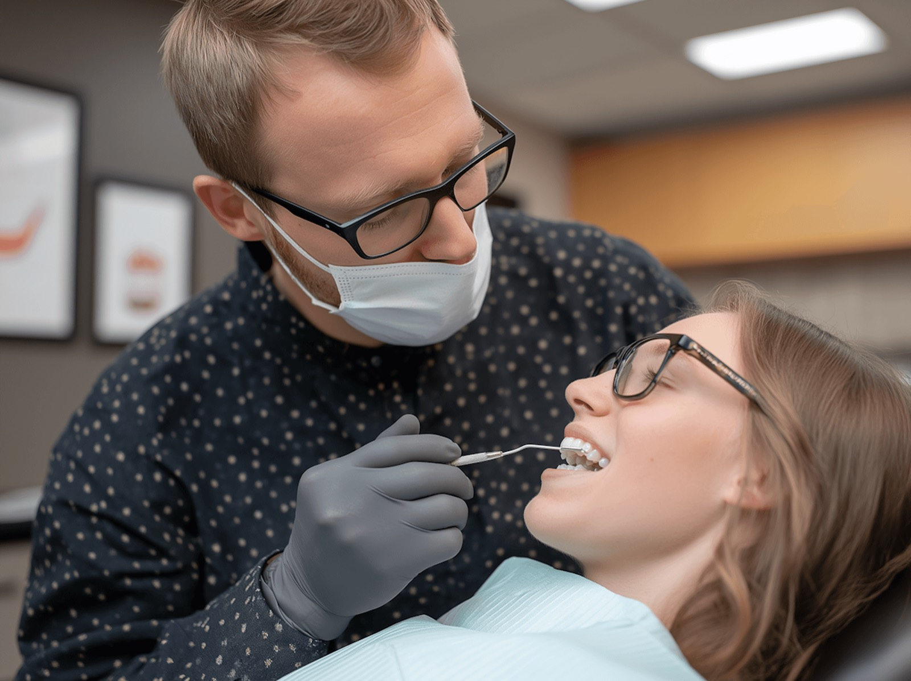

Pourquoi Ondelys existe, et ce qui n'a pas changé depuis le premier jour.
Ondelys est né d'un constat simple, fait par le Dr Sophie Marchal après dix ans passés en chirurgie dentaire hospitalière à Strasbourg : beaucoup de patients repoussaient leurs soins pendant des années, parfois jusqu'à l'urgence, à cause d'un mauvais souvenir d'enfance ou d'une peur qu'on ne prenait jamais vraiment le temps d'écouter. En 2015, elle ouvre un cabinet de trois fauteuils rue des Tilleuls avec une idée directrice : la première consultation doit rassurer avant de soigner.
Concrètement, cela s'est traduit par des choix modestes mais qui changent l'expérience : des rendez-vous de première visite allongés à 45 minutes pour expliquer chaque étape, l'abandon des empreintes en pâte au profit d'un scanner optique dès 2017, et une salle d'attente pensée pour ne pas ressembler à une salle d'attente. Les patients qui n'avaient pas vu de dentiste depuis des années sont restés.
L'équipe s'est ensuite élargie avec l'arrivée du Dr Thomas Hertz pour l'orthodontie et du Dr Lina Weiss pour l'implantologie, permettant à Ondelys de suivre un même patient sur des parcours de soins plus longs, sans le renvoyer d'un cabinet à l'autre. Le nombre de fauteuils a doublé depuis ; l'esprit du premier jour n'a pas changé.

Patients accompagnés
Cliniques partenaires
Partenaires actifs
Taux de satisfaction
Le Dr Sophie Marchal ouvre Ondelys, 12 rue des Tilleuls à Strasbourg, avec trois fauteuils et une conviction : soigner commence par rassurer.
Adoption d'un scanner optique intra-buccal pour remplacer les empreintes en pâte — l'une des premières sources d'appréhension à disparaître.
Ouverture d'un pôle orthodontie, avec des solutions de gouttières transparentes sur-mesure pour les adultes comme pour les adolescents.
Le cabinet passe à six fauteuils et développe l'implantologie et la chirurgie guidée sous la houlette du Dr Weiss.
Ondelys continue de grandir sans renoncer à l'attention portée à chaque premier rendez-vous.
Chaque soin commence par une explication claire, pas par un instrument.
Un plan de traitement détaillé, sans surprise, avant de commencer.
Scanner optique et imagerie numérique pour des soins plus doux.
Une équipe qui connaît votre dossier d'une visite à l'autre.
Envie de rencontrer l'équipe ou de prendre rendez-vous ?
Prendre rendez-vous